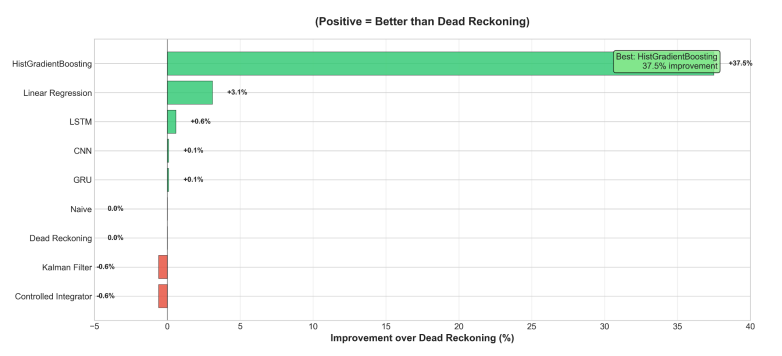
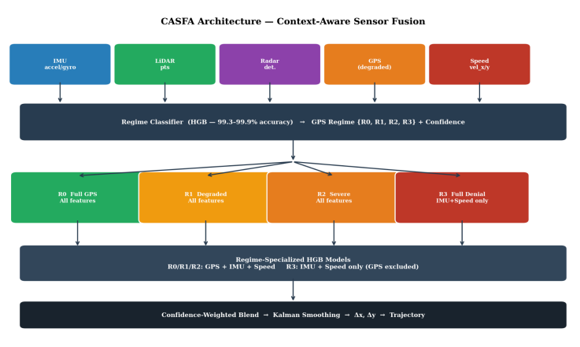

Research focus
This thesis work centered on how intelligent systems can be designed around real operating constraints rather than purely idealized assumptions. The emphasis was on combining sensing, computation, and practical deployment in a way that yields useful and measurable outcomes in the physical world.
The research problem
The main challenge was translating an idea into a technically grounded system that could handle constraints such as hardware limitations, noisy environments, and the need to make decisions based on incomplete real-world data. Research of this kind is not only about algorithmic elegance — it is about making systems function reliably and with a clear engineering story behind them.
From concept to validation
The research path moved through literature review, system definition, prototyping, and evaluation. Each phase helped clarify the gap between theory and implementation. The most valuable part of the work was not only producing a result, but learning how to shape a technical problem into a model that could be tested, improved, and ultimately translated into a deployable solution.
System thinking
Research methodology
The work combined conceptual design, experimentation, and evaluation so the project could be understood both technically and academically.
Practical realization
Embedded systems and sensing strategies were used to ground the research in demonstrable behavior and outcomes rather than isolated theory.
Results and learning
This research strengthened the ability to connect data, control, and design decisions with real-world performance. It reinforced the idea that the best technical work is often driven by real constraints, observation, and iterative refinement rather than one-shot innovation. This mindset has carried into my engineering and portfolio work across robotics, embedded systems, and applied product design.
Visual documentation


